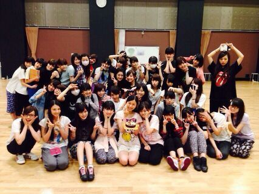

こんばんわ〜(*´∇｀*).♪
ろってぃーだよ〜..* 隣は真夏やよ.
ツアー地方最後、〜名古屋 〜))))
本当に ありがとうございました\(*^.^*)/
名古屋も大盛り上がりで、本当に楽しくて幸せな時間を過ごせました..*
福岡、仙台にきてくださった皆様、モバメを登録してくださっている皆様は もう知っていると思うのですが、
れなさんがliveに出れない日には
お姉さんユニット『その先の出口』をれなさんポジに入って、私がやらせて頂きました。
後から覚えたから、皆と練習できるのも少なく、本番は不安でしたが、楽しくパフォーマンスをすることができました*^^*
名古屋のliveでは、れなさんが居るから出ないつもりだったのですが、昼公演が始まる直前にスタッフさん方に「まひろ、夜公演ななみポジできるか？」って言われました。
れなさんポジをちゃんと習得したすぐで、ポジションによって振り付けもちゃうし、移動も多いし。
でもここはプロとして断ったらカッコ悪いと思って、絶対 夜までに覚えきったる思って意地だしてみた。。てへ
どうにか 頭スーパーウルトラMAX回転させて 体にたたきこんだよ 笑 足パンパンなりました
パフォーマンスが終わったあと、客席から『ろってぃー良かったよー！！！』『ろってぃー頑張ったーーー！』って言葉が聞こえてきて、本当に嬉しかったです。ありがとう\(*´ω`(*´ω｀*)/
またどこかで その先の出口できるといいね..*
・ ・ ・ ・ ・
そーいえば、福岡かな？
liveが終わって 私が疲れて寝ちゃっている時に、スタッフさんが 掛け布団を かけてくださってました。あたたかさを感じた。えっと、、人のあたたかさと、布団のあたたかさどっちも。笑
心優しき スタッフさん 私に掛け布団をかけてくださって、ありがとうございました。
今日のリハーサル後の集合写真です！

私は 右上の人間。
ではではっ そろそろ寝ましょうね(/-＼*)
おやすみなさい..* 大好きだよ？
のし。